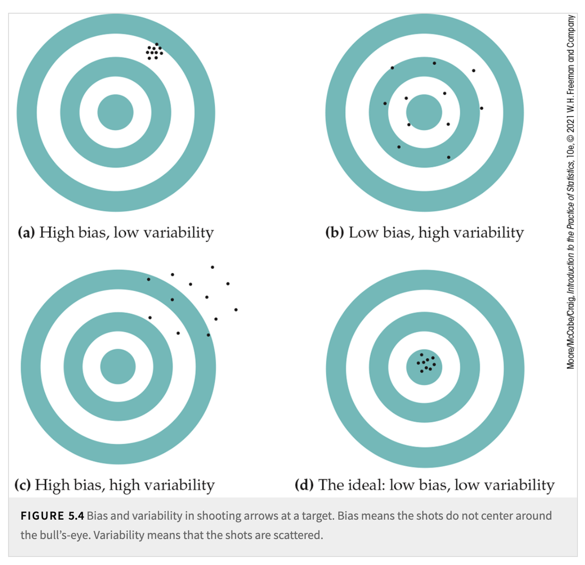

5. Sampling Distributions#
Textbook reference
This chapter corresponds to Chapter 5 of Introduction to the Practice of Statistics (Moore, McCabe & Craig, 10th ed.). Note that the course chapter numbers (shown in the sidebar) follow our teaching order, which differs from the textbook order.
Learning objectives
After this chapter, you will be able to:
Explain the three stages of a statistic (random variable → formula with data → number) and define the sampling distribution of a statistic.
Describe the quality of an estimator in terms of bias and variability, and interpret the bullseye picture of the four combinations.
State and use the facts \(\mu_{\bar{x}} = \mu\) and \(\sigma_{\bar{x}} = \sigma/\sqrt{n}\), and explain what the Central Limit Theorem does (and does not) say.
Recognize a binomial setting, give the mean \(np\) and standard deviation \(\sqrt{np(1-p)}\) of a count, and check the Normal approximation rule of thumb.
Given a population mean and standard deviation, describe the sampling distribution of \(\bar{x}\) and use it to say how close \(\bar{x}\) typically falls to \(\mu\).
Key concepts at a glance
Toward statistical inference · Sampling distribution of a sample mean, CLT · Counts and proportions, binomial · Putting it all together
Where are we? A question before we start
Your sample of 25 students averages \(\bar{x} = 67.1\) inches; your classmate’s different 25 students give \(\bar{x} = 66.4\). Both are “the” sample mean — computed by the same recipe, both perfectly legitimate. But if \(\bar{x}\) changes with every sample, what can one \(\bar{x}\) possibly tell us about \(\mu\)? The answer of this chapter: quite a lot — provided we stop staring at any single \(\bar{x}\) and instead study how \(\bar{x}\) itself varies from sample to sample. That pattern of variation is called the sampling distribution, and it is the engine behind every inference method in the rest of the course.
In this chapter, we will begin to study statistical inference-the process of drawing conclusions about the population from the sample dataset. This involves a directional arrow from the sample dataset to the population. Typically, we are interested in either the values of population parameters or in addressing claims/statements about the population. Using information from the sample and following specific statistical procedures, we aim to:
Estimate population parameters.
Make conclusions about claims or statements related to the population.
Our goal is not merely to describe the sample dataset but to answer deeper questions such as:
What is our best guess? - This is referred to as estimation.
Does the data strongly contradict a proposed claim? - This is referred to as hypothesis testing.
Together, estimation and hypothesis testing form the two major pillars of frequentist[1] statistical inference.[2]
In both estimation and hypothesis testing, the process typically begins with computing a sample statistic-for example, a sample mean, a sample proportion, or a more elaborate function of the data.
For estimation, the goal is to estimate unknown population parameters (e.g., the population mean \(\mu\) or population proportion \(p\)).
You designate a particular statistic as your estimator for the corresponding population parameter.
When you plug in your observed data into that estimator, you obtain the estimate-a numerical result that provides your best guess for the parameter.
For hypothesis testing, the process starts with a claim or assumption about the population, called the null hypothesis (\(H_0\)). The goal is to determine if the data provide enough evidence to reject \(H_0\).
You compute a test statistic from the sample.
The test statistic is used to assess whether the observed data are consistent with the null hypothesis.
Details of hypothesis testing will be explored further in later chapters.
5.1. Toward Statistical Inference#
A question before this section
In Chapter 3 you met the sample mean as a number you compute. Here is the shift in perspective this section demands: before you collect the data, what is \(\bar{X}\)? You cannot name its value — it depends on which 25 students the random draw happens to pick. A quantity whose value is determined by a random draw is… a random variable. And random variables have distributions. So the sample mean — the humble average — secretly has a distribution of its own. What does it look like?
Since a statistic is a central concept in the whole process, let’s revisit it and delve deeper into its meaning-like peeling an onion.
Let’s use our friend, the sample mean, as an example. In the previous chapter, we introduced the formula to calculate the sample mean \(\bar{x}\) using observed sample observations:
This can be thought of as Stage 2 (Post-data, symbolic) in the analysis of a statistic. At this stage, you substitute the observed sample values (denoted by lowercase letters) into the function defined in Stage 1. It becomes a computed expression using the actual sample data.
Stage 1 (Pre-data): At this stage, a statistic is considered a function of random variables (denoted by uppercase letters) and is itself a random variable in theoretical probability. For the sample mean, the function is:
The last stage, Stage 3 (A final numeric result), is where you obtain a concrete, single value from your particular dataset. The term statistic can refer to all these stages. So, it’s the same object conceptually-just viewed at three points in time:
Before sampling (theory): The statistic is a random variable.
After sampling (the formula with observed data): The statistic is computed symbolically.
Ultimate numeric realization: The statistic becomes a single numeric value.
In summary, a statistic evolves through these three stages as part of the analysis process.
An estimator corresponds to Stage 1, and the estimate corresponds to Stage 3. There is another term, estimand, which refers to the quantity or parameter in the population that we aim to estimate using data. The estimand represents the true but unknown value of interest, such as a mean, proportion, variance, difference, or another statistical measure describing the population.
Now that we know the three stages, let’s revisit Stage 1. At this stage, a statistic is actually a random variable, and as a random variable, it has a distribution. Imagine a thought experiment where we take one sample repeatedly, and each time, we calculate the statistic. These values form a distribution both empirically (based on repeated sampling) and hypothetically (what the statistic would look like if we had taken a different sample). This distribution is called the Sampling Distribution[3].
Example: the sampling distribution you can SEE — dice
Heights make the “repeated sampling” thought experiment abstract, because we can never actually redo the sample. Dice make it concrete, because we can redo the “sample” as many times as we like.
The population distribution (one roll of a fair die): each face \(1, 2, \dots, 6\) has probability \(1/6\). The histogram is perfectly flat — nothing bell-shaped about it. Its mean is \(\mu = 3.5\) and its standard deviation is \(\sigma = 1.708\).
The statistic: roll the die \(n\) times and take the average, \(\bar{x}\). That is a “sample of size \(n\)” from this population.
The sampling distribution of \(\bar{x}\) for \(n = 2\): roll two dice and average them, over and over. Now \(\bar{x}\) can be \(1, 1.5, 2, \dots, 6\), and the values are not equally likely: there is only 1 way to average to 1 (both dice show 1), but 6 ways to average to 3.5 (1-6, 2-5, 3-4, 4-3, 5-2, 6-1). The histogram is a triangle, peaked at 3.5.
For larger \(n\) (average of 10 dice, of 100 dice…): the histogram of \(\bar{x}\) grows a smooth, symmetric bell shape, centered at 3.5, and squeezes narrower and narrower.
Flat → triangle → bell. Nothing about any individual die changed — each roll stays flat forever. What changed is the distribution of the average. You have just watched the Central Limit Theorem (coming up in the next section) happen before your eyes. Every simulation you run in lab of “many samples, histogram of the \(\bar{x}\)’s” is exactly this picture, with students in place of dice.
For a sampling distribution, we can also measure its center (mean) and its spread (variability). A statistic is an unbiased estimator of a parameter if the mean of its sampling distribution equals the true value of the population parameter. In other words, the statistic, on average, is correct.
We have already discussed the sources of bias in the sampling design section. Using random sampling can help reduce bias.
Variability describes the spread of the sampling distribution. It quantifies how much the statistic (e.g., sample mean, sample proportion) fluctuates from sample to sample. Larger samples have less variability because the sampling distribution becomes narrower as \(n\) increases. Variability usually comes from two sources:
Sampling variability: The value of a statistic varies in repeated random sampling.
Measurement variability: Repeated measurements on the same individual can differ because of imprecision in the measurement process.
A numerical measure of the spread of a sampling distribution is often calculated, called the margin of error. It provides bounds on the likely error when using the statistic as an estimator of a population parameter. The margin of error relates to the standard deviation of the sampling distribution (e.g., \(\sigma/\sqrt{n}\)). In practice, this quantity is estimated from the data by plugging in sample estimates (e.g., \(s/\sqrt{n}\)); that estimated value is called the standard error.
Ideally, we want an estimator to be both unbiased (accurate on average) and reliable (low variability).
{kind=link}

Fig. 5.1 Bias and Variability#
How to read this figure (four targets, four estimators)
Think of each panel as an archery target. The bullseye is the true parameter value (say, \(\mu\)). Each dot is the value of the statistic from one sample — one full “take a sample, compute \(\bar{x}\)” cycle. Many dots = many repeated samples, i.e., the sampling distribution made visible.
High bias, low variability: the shots cluster tightly — but around the wrong spot. Chapter 3’s “always survey the men’s basketball team” estimator lives here: nearly the same (wrong) answer every time.
Low bias, high variability: the shots center on the bullseye on average, but scatter widely. Chapter 3’s “SRS of only \(n = 5\) students”: right on average, wild in any single sample.
High bias, high variability: scattered and off-center — the worst of both diseases.
Low bias, low variability: tightly clustered on the bullseye. This is the ideal, and the rest of the chapter shows how to get there: random sampling kills bias (centers the shots), and a larger \(n\) tames variability (tightens the cluster).
One reading trap: a single dot tells you almost nothing — a high-bias estimator can land one lucky shot on the bullseye. Bias and variability are properties of the whole pattern (the sampling distribution), never of one sample.
5.2. The Sampling Distribution of a Sample Mean#
A question before this section
The dice example showed us the pattern: averages pile up in a bell shape around 3.5, and the more dice we average, the tighter the pile. But “I saw it happen with dice” is not a theory. Where exactly is the bell centered? How fast does it narrow as \(n\) grows? And does this work for heights, incomes, and reaction times — or only for dice? This section answers all three with two short formulas and one celebrated theorem.
From the sample mean formula presented in the previous chapter, we can see that the sample mean, \(\bar{X}\), is a sum of random variables. These random variables, \(X_1\) to \(X_n\), come from the same population distribution. If the sample size \(n\) is large, then the sampling distribution of \(\bar{X}\) is approximately normal, regardless of the shape of the population distribution[4].
This powerful result is one of the most central mathematical results in statistics, the Central Limit Theorem (CLT). In simple terms, the CLT states that the sum (or mean) of random variables follows a normal distribution as the sample size grows large.
For normal distributions, there are two parameters-mean \(\mu\) and variance \(\sigma^2\)-that govern the shape of the distribution. Using basic algebra and knowledge of probability, we can derive these two parameters for the sampling distribution.
If the population has mean \(\mu\), then \(\mu\) is the mean of the distribution of each observation \(X_i\). To get the mean of \(\bar{x}\), we use the rules for means of random variables. Specifically,
That is, the mean of \(\bar{x}\) is the same as the mean of the population. The sample mean \(\bar{x}\) is, therefore, an unbiased estimator of the unknown population mean \(\mu\).
Because the observations are independent, the addition rule for variances also applies:
With \(n\) in the denominator, the variability of \(\bar{x}\) about its mean decreases as the sample size grows. Thus, a sample mean from a large sample will usually be very close to the true population mean \(\mu\).
Draw an SRS of size \(n\) from any population with mean \(\mu\) and finite standard deviation \(\sigma\). When \(n\) is large, the Central Limit Theorem states that the sampling distribution of the sample mean \(\bar{x}\) is approximately Normal:
(Following the IPS convention, the second argument of \(\mathcal{N}\) is the standard deviation \(\sigma/\sqrt{n}\), not the variance.)
If a population has the \(\mathcal{N}(\mu, \sigma)\) distribution, then the sample mean \(\bar{x}\) of \(n\) independent observations has the \(\mathcal{N}(\mu, \sigma / \sqrt{n})\) distribution.
Example: \(\sigma/\sqrt{n}\) at work — averaging washes out individual variation
Purdue student heights have standard deviation about \(\sigma = 4\) inches: individual students routinely differ from \(\mu\) by several inches.
One student (\(n = 1\)): the “sample mean” is just that student’s height, with standard deviation \(4\) inches.
Average of \(n = 25\) students: \(\sigma_{\bar{x}} = \dfrac{4}{\sqrt{25}} = 0.8\) inches.
Average of \(n = 100\) students: \(\sigma_{\bar{x}} = \dfrac{4}{\sqrt{100}} = 0.4\) inches.
Why does averaging help? In any sample of 25, you will draw some unusually tall students and some unusually short ones — and inside the average, those individual quirks partially cancel out. The average is steadier than any of its ingredients. Note the \(\sqrt{n}\) price tag, though: cutting the standard deviation in half (from 0.8 to 0.4) required quadrupling the sample size (25 → 100), not doubling it. Precision gets expensive.
Common misunderstanding
Students often think: “The CLT says that if I collect a large enough sample, my data will look Normal.”
In fact: the CLT is a statement about the sample mean \(\bar{x}\), not about the data. The distribution of \(\bar{x}\) (over repeated samples) becomes approximately Normal as \(n\) grows — but the data keep whatever shape the population has. Roll a die 10,000 times: the histogram of the rolls is as flat as ever. The die stays flat; only the average of many rolls is bell-shaped.
Quick check: household incomes are strongly right-skewed. You take an SRS of \(n = 1{,}000\) households. Which is approximately Normal — the histogram of the 1,000 incomes, or the sampling distribution of their mean? (The second. The 1,000 incomes will look just as skewed as the population.)
Common misunderstanding
Students often think: “Since \(\sigma_{\bar{x}} = \sigma/\sqrt{n}\), taking a bigger sample makes the individual observations less variable.”
In fact: nothing about individuals changes — students in a sample of 100 are exactly as diverse (sd \(\approx 4\) inches) as students in a sample of 25. What shrinks is the variability of the mean from sample to sample. The \(\sqrt{n}\) divides the spread of the average, not the spread of the people.
Quick check: with \(n = 100\) and \(\sigma = 4\), roughly what fraction of individual students in your sample are within 0.4 inches of \(\mu\)? (Very few — 0.4 inches is only a tenth of the individual sd. It is \(\bar{x}\), not any individual, that lands within about 0.4 of \(\mu\) in most samples.)
5.3. Sampling Distributions for Counts and Proportions#
A question before this section
Not every question is an average of a measurement. “What proportion of Purdue students are from Indiana?” — each student answers only yes or no. “How many sixes in 60 rolls of a die?” — each roll either is a six or is not. Do such yes/no counts have sampling distributions too? They do — and pleasingly, a yes/no variable is just a variable that takes values 1 and 0, so a proportion is secretly a sample mean and everything from the last section carries over.
Before we dive into this section’s material, let us explore a new random variable and its associated distributions. The setting, with its list of requirements, is as follows. This setting appears frequently in many applications or experiments:
The experiment consists of a sequence of \(n\) smaller experiments called trials, where \(n\) is fixed in advance of the experiment. You can think of \(n\) data points as being drawn from the same population.
Each trial can result in one of the same two possible outcomes (dichotomous trials), which we generically denote by success (\(S\)) and failure (\(F\)). The assignment of the \(S\) and \(F\) labels to the two sides of the dichotomy is arbitrary. Often, we use the numerical value 1 to indicate \(S\) and 0 to indicate \(F\).
The trials are independent, meaning the outcome of any particular trial does not influence the outcome of any other trial.
The probability of success \(\mathbb{P}(S)\) is constant from trial to trial, denoted by \(p\), which represents the population proportion.
Definition 5.1 (Binomial Experiment)
An experiment that satisfies the above conditions-Condition 1, Condition 2, Condition 3, and Condition 4 (a fixed number of dichotomous, independent, and homogeneous trials)-is called a binomial experiment.
So, here we have a sample of \(n\) dichotomous data points, where each \(x_i\) in the sample takes a value of 1 or 0. The sum of these points represents the count of successes in the sample. If we calculate the sample mean \(\bar{x}\), it is simply the sample proportion. Depending on the context, we can define what constitutes a “success.”
From the results in the previous section, we know that the sampling distribution of the sample mean \(\bar{x}\) is approximately normal for large \(n\), with the following parameters:
Mean: \(\mu_{\bar{x}} = \mu_{\text{population}} = p\)
Standard deviation: \(\sigma_{\bar{x}} = \frac{\sigma_{\text{population}}}{\sqrt{n}} = \frac{\sqrt{p(1-p)}}{\sqrt{n}}\)
In this dichotomous setting, the sample mean is usually written \(\hat{p}\) and called the sample proportion. Its close companion is the count of successes itself, \(X = x_1 + x_2 + \cdots + x_n\), so that \(\hat{p} = X/n\). The count \(X\) has a distribution important enough to carry its own name.
Definition 5.2 (Binomial Distribution)
The count of successes \(X\) in a binomial experiment with \(n\) trials and success probability \(p\) has the binomial distribution, written \(X \sim B(n, p)\). Its mean and standard deviation are
(These follow from the rules for means and variances: \(X\) is a sum of \(n\) independent 0/1 variables, each with mean \(p\) and variance \(p(1-p)\).)
For large \(n\), the same Central Limit Theorem reasoning that made \(\bar{x}\) approximately Normal makes the count \(X\) (a sum) and the proportion \(\hat{p}\) (a mean) approximately Normal as well:
Count: \(X\) is approximately \(\mathcal{N}\left(np, \sqrt{np(1-p)}\right)\).
Proportion: \(\hat{p}\) is approximately \(\mathcal{N}\left(p, \sqrt{\frac{p(1-p)}{n}}\right)\).
How large is “large”? The usual rule of thumb: use the Normal approximation when
that is, when we expect at least 10 successes and at least 10 failures. (The approximation struggles when \(p\) is close to 0 or 1, because the binomial distribution is then strongly skewed — the rule of thumb guards against exactly that.)
Example: how many sixes in 60 rolls?
Roll a fair die \(n = 60\) times and count the sixes. Each roll is a trial; “success” means rolling a six, so \(p = 1/6\), and the four binomial conditions hold (fixed \(n\), two outcomes, independent rolls, constant \(p\)). Thus \(X \sim B(60, \tfrac{1}{6})\), with
Checking the rule of thumb: \(np = 10 \geq 10\) and \(n(1-p) = 50 \geq 10\) — we just barely qualify, so \(X\) is approximately \(\mathcal{N}(10, 2.887)\). Getting 7 or 13 sixes (about one \(\sigma_X\) from 10) would be completely unremarkable; getting 2 sixes (nearly three \(\sigma_X\) below 10) should make you look hard at that die. Chapter 6 turns exactly this instinct — “how far from expected is too far?” — into a formal procedure.
5.4. Putting It All Together: One \(\bar{x}\), Fully Decoded#
Let’s return to where the chapter began and run the whole framework over it.
You take an SRS of \(n = 25\) Purdue students and get \(\bar{x} = 67.1\) inches. Population heights have standard deviation \(\sigma = 4\) inches. What does this one number tell us about \(\mu\)?
Step 1 — Name what kind of object \(\bar{x}\) is. Before sampling, \(\bar{X}\) was a random variable (Stage 1); 67.1 is one realization of it (Stage 3). Asking “what can 67.1 tell us?” really means asking “how does the random variable \(\bar{X}\) behave?”
Step 2 — Write down the sampling distribution. By the rules for means and variances, \(\mu_{\bar{x}} = \mu\) (unbiased — the bullseye picture’s shots are centered) and \(\sigma_{\bar{x}} = \sigma/\sqrt{n} = 4/\sqrt{25} = 0.8\) inches. Heights are approximately Normal to begin with, so \(\bar{X} \sim \mathcal{N}(\mu, 0.8)\) — and even if they weren’t, the CLT would deliver approximate Normality.
Step 3 — Translate the distribution into a plain-English guarantee. By the 68–95–99.7 rule, in about 95% of all possible samples, \(\bar{x}\) lands within \(2 \times 0.8 = 1.6\) inches of \(\mu\). Individual students routinely miss \(\mu\) by 4+ inches; the average of 25 almost never misses by more than 1.6.
Step 4 — Be honest about what we still don’t know. Our particular \(\bar{x} = 67.1\) is either one of the lucky 95% (within 1.6 of \(\mu\)) or one of the unlucky 5% — and we cannot tell which. What we can say: the procedure that produced 67.1 lands close to the truth in the vast majority of samples. Turning that statement about the procedure into an interval of believable values for \(\mu\) — from \(67.1\) itself — is precisely the first job of Chapter 6.
The chapter in one sentence: a statistic is a random variable; its sampling distribution has a center (bias question), a spread (variability question, shrinking like \(\sigma/\sqrt{n}\)), and — thanks to the CLT — a Normal shape; and those three facts are what make inference from one sample possible.
5.5. Check Your Understanding#
1. A fair die is rolled 10,000 times. Sketch (in words) the histogram of the 10,000 rolls, and the histogram of \(\bar{x}\)’s from many samples of 10,000 rolls. Why do they differ?
The 10,000 individual rolls form an essentially flat histogram over \(1, \dots, 6\) — the data always keep the population’s shape, no matter how large \(n\) gets. The sampling distribution of \(\bar{x}\) is an extremely narrow bell centered at 3.5 with standard deviation \(1.708/\sqrt{10000} \approx 0.017\). The CLT describes the second histogram, never the first.
2. To cut the standard deviation of \(\bar{x}\) from 0.8 inches to 0.2 inches, how must the sample size change from \(n = 25\)?
Since \(\sigma_{\bar{x}} = \sigma/\sqrt{n}\), dividing the standard deviation by 4 requires multiplying \(n\) by \(4^2 = 16\): from 25 to \(n = 400\) students (\(4/\sqrt{400} = 0.2\)). Precision improves only at the slow \(\sqrt{n}\) rate — one reason real surveys must balance accuracy against cost.
3. A pollster interviews \(n = 50\) voters in a county where \(p = 0.5\) support a measure; another interviews \(n = 50\) in a county where \(p = 0.04\). For which count of supporters is the Normal approximation reasonable?
Only the first. County one: \(np = 25\) and \(n(1-p) = 25\) — both comfortably at least 10, so \(X\) is approximately \(\mathcal{N}(25, \sqrt{50 \cdot 0.5 \cdot 0.5}) = \mathcal{N}(25, 3.536)\). County two: \(np = 2\), far below 10; with successes that rare, \(B(50, 0.04)\) is strongly right-skewed (counts of 0, 1, 2 dominate) and no bell curve fits it. Same \(n\), very different verdicts — the rule of thumb \(np \geq 10\) and \(n(1-p) \geq 10\) exists precisely to catch the skewness caused by extreme \(p\).